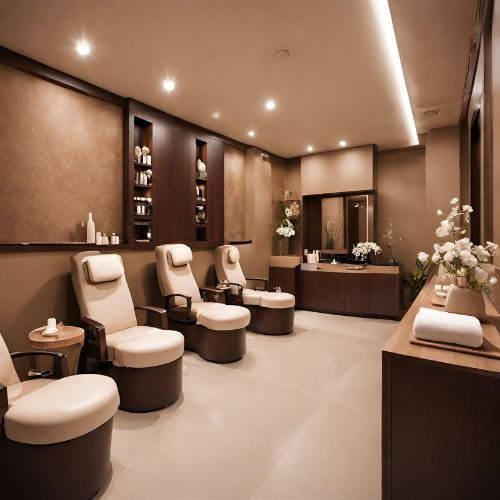

Indulge in the ultimate pampering experience with
our Natural Bliss Manicure & Pedicure at Taj Radiance Spa.
Designed to nurture and beautify your hands and feet,
this luxurious treatment is perfect for those seeking relaxation and rejuvenation.

As you sink into the plush, oversized chairs, our skilled technicians will begin by gently exfoliating your hands and feet to remove dry, rough skin. Using only the highest quality natural products, free from harsh chemicals, they'll meticulously groom your cuticles and shape your nails to perfection.
Next, prepare to be transported to a state of pure bliss as your technician performs a soothing massage, using a nourishing blend of botanical oils to hydrate and soften your skin. Feel the tension melt away as they work to improve circulation and promote a sense of deep relaxation.
Indulge in the calming scents of lavender, chamomile, and ylang-ylang, which fill the air and further enhance the tranquil ambiance. Your technician will pay close attention to your preferences, ensuring that every aspect of the treatment is tailored to your individual needs.
Complete your experience by selecting a polish from our curated collection of natural, non-toxic shades. Whether you prefer a classic nude or a bold, vibrant hue, your nails will be left perfectly polished and ready to take on the world.
Escape the hustle and bustle of everyday life and treat yourself to the Natural Bliss Manicure & Pedicure at Taj Radiance Spa. Restore balance to your mind, body, and spirit as you indulge in pure relaxation and natural beauty.